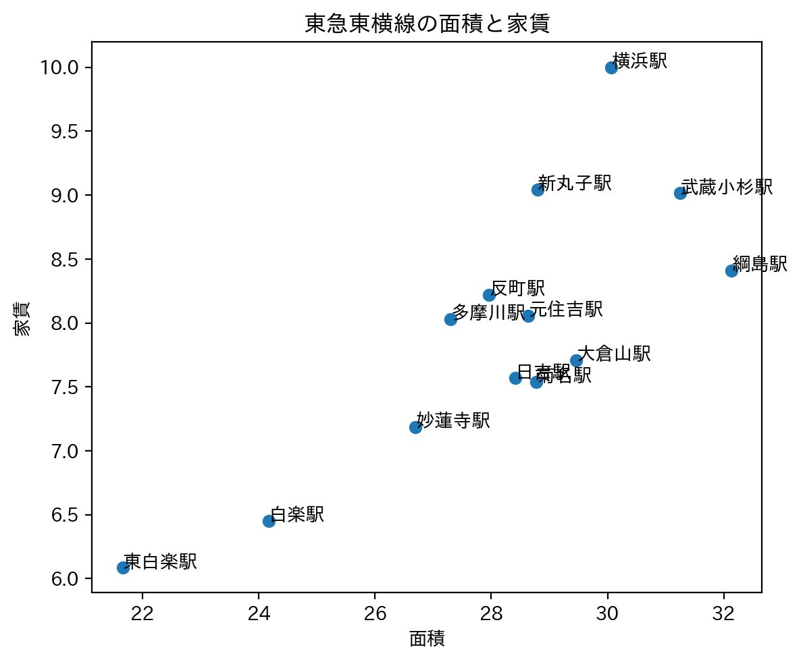
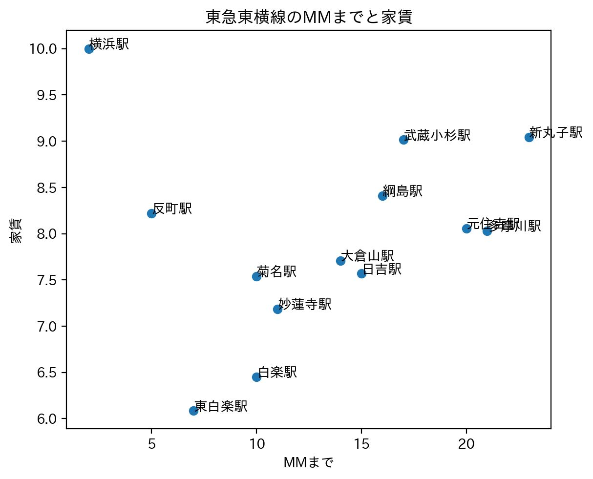

おすすめ物件（７班）
＜対象＞
・来年度神奈川大学に入学する
・一人暮らしをする
・東急東横線を使う
・家賃８万円前後を希望
する人を対象にしました。

東急東横線は物件数も多く、家賃も約８万円となる路線です。
＜分析＞
東急東横線の駅を班の人と分担して分析したいと思います。
私の担当は東白楽・大倉山・武蔵小杉駅です。
東白楽駅
- 物件数は約５００件と少ない
- 平均家賃は約６，１万円
- 平均面積は２２㎡（約１２畳）と狭い
- 平均MMまでは約７分
大倉山駅
- 物件数は約７００件と中間くらい
- 平均家賃は約７，７万円
- 平均面積は２９，５㎡（約１５畳）
- 平均MMまでは約１４分
武蔵小杉駅
- 物件数は１０００件超と多い
- 平均家賃は約９，０万円と少し高め
- 平均面積は約３１㎡（１６畳）
- 平均MMまでは約１７分


＜まとめ＞
東白楽、大倉山駅は８万円以下であり、今回の対象とする人の条件に当てはまります。
家賃の安さを重視するなら、東白楽駅周辺の物件をおすすめしたいです。
狭い部屋にはなってしまうがMMまでの距離が近いので、一人暮らしの人にとって魅力的な物件が多いと思いました。
さらに横浜キャンパスの最寄り駅にもなっているので、２つのキャンパスを利用する人は住みやすいと思います。
物件数は他２駅と比べ少ないので早めに検討するのがよいと思いました。
部屋の広さを重視するなら、大倉山駅周辺の物件をおすすめしたいです。
東白楽駅と吉良ベ家賃は高く、MMまではとおくなってしまうが一人暮らしには十分な広さの部屋を見つけることができると思います。